| 字段 | 内容 |
|---|---|
| 文档编号（文件 ticket） | GT-12731 |
| 需求名称 | GT-12723 禁用模块切换交互闪回修复 / GT-12751 高级过滤规则优化项 / GT-12753 处置策略去自定义模板 / GT-11675 图片识别OCR深度检测缺失 / GT-11651 内容规则执行动作调整 / GT-12754 反病毒引擎配置优化 |
| 规格类型 | 增量规格（Incremental）· 缺陷修复 + 功能优化 |
| 当前版本 | v7 |
| 生成日期 | 2026-08-02 |
| 路由路径 | /zh/security/pipeline（策略流水线 → 阶段3 内容层抽屉） |
| 组件路径 |
src/components/security/useModuleMaster.ts、
src/components/security/UrlProtectionPage.tsx、
src/components/security/intent-engine/IntentEnginePage.tsx、
src/components/security/AttachmentSecurityPage.tsx、
src/components/security/PolicyPipelinePage.tsx
|
| webapp commit | 0b41d26（工作区含 GT-12723 修复变更，待提交） |
| 对照 spec commit | not-used |
| 历史对话记录 | 当前上下文已提供（用户缺陷描述 + 两张问题现象截图 + 代码修复记录） |
| 事实源优先级 | 1. 用户当前描述；2. 运行中 webapp 浏览器真实截图；3. webapp 源码 |
| 浏览器验证状态 | 2026-08-02 演示环境真实截图（浅色主题 / AI版·单租户 / 平台管理员 / 阶段3 内容层抽屉，宽屏 1920×900）；问题现象截图为用户实拍 |
| 变更类型 | 缺陷修复（渲染时序 / 竞态消除） |
本次修复作用于「策略流水线 → 阶段3 内容层」抽屉左侧导航的圆点 / 摘要渲染时序，不改变任何模块的可见性或可编辑权限，仅修正加载期的显示时序。矩阵记录抽屉内 4 个内容层模块导航项在各形态 / 角色下的可见性（与本次修复相关的呈现载体）。
| 功能 / 元素 | 变更 | AI-单 平台管理员 |
传统-单 平台管理员 |
云-多 平台管理员 |
云-多 租户管理员 |
AI-多 平台管理员 |
AI-多 租户管理员 |
传统-多 平台管理员 |
传统-多 租户管理员 |
|---|---|---|---|---|---|---|---|---|---|
| 阶段3 导航 · 附件安全检测圆点/摘要 | #2 | ✅ | ? | ? | ? | ? | ? | ? | ? |
| 阶段3 导航 · URL检测与防护圆点/摘要 | #1 #2 | ✅ | ? | ? | ? | ? | ? | ? | ? |
| 阶段3 导航 · 内容规则圆点/摘要 | #2 | ✅ | ? | ? | ? | ? | ? | ? | ? |
| 阶段3 导航 · 意图引擎圆点/摘要 | #1 #2 | ✅ | ? | ? | ? | ? | ? | ? | ? |
? 标记项：本次仅在 AI版·单租户 / 平台管理员形态下通过浏览器验证（该形态可访问策略流水线抽屉并展示完整 4 模块导航）。其余形态 / 角色（尤其是多租户下的策略流水线抽屉可见性）未在本次逐一验证，列入待确认 Q-001。修复本身为纯前端渲染时序调整，逻辑与形态 / 角色无关。
阶段3 内容层抽屉的左侧导航（PolicyPipelinePage 渲染）会为每个模块显示一个「圆点 + 摘要」：模块启用时圆点填充、摘要显示能力清单（如「信誉评估/沙箱分析/仿冒检测」）；未启用时圆点空心、摘要显示「未启用」。各模块子页负责把自己的真实启用态通过 onEnabledChange 回调上报给导航。
useModuleMaster 读取启用态，附件安全检测子页通过其本地 draft 读取。两者在 GET /security/modules（或附件配置）返回之前，都把启用态乐观初始化为 true，并立即经 onEnabledChange 上报。于是点击一个「未启用」模块时，导航先按「已启用」渲染（圆点亮起、摘要显示能力清单），等真实状态加载完成后才翻转回「未启用」——形成用户观察到的「标签先变启用、再闪回未启用」。
useModuleMaster 新增 loaded: boolean 状态，区分「加载中的乐观默认」与「已知的真实状态」；仅当 loaded === true 时子页才向导航上报。URL / 意图子页改用 if (moduleLoaded) onEnabledChange?.(moduleEnabled) 门控上报；附件子页复用其已有的 loading 状态，改为 if (!loading) onEnabledChange?.(draft.enabled)。加载期间子页不再推送乐观值，导航首帧改由父级兜底真值决定（见变更 2）。
触发路径：策略流水线 → 打开阶段3 内容层抽屉 → 当前停留在「内容规则」，左侧导航中「URL检测与防护」为未启用态（空心圆点 + 摘要「未启用」）· 用户实拍（浅色主题）
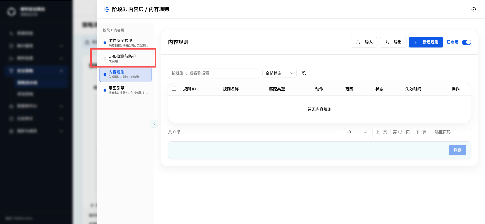
触发路径：从 S-1 起，点击左侧导航「URL检测与防护」→ 加载期间该导航项标签闪变为已启用（实心圆点 + 能力摘要「信誉评估/沙箱分析/仿冒检测」）→ 真实状态返回后又闪回未启用 · 用户实拍（浅色主题）
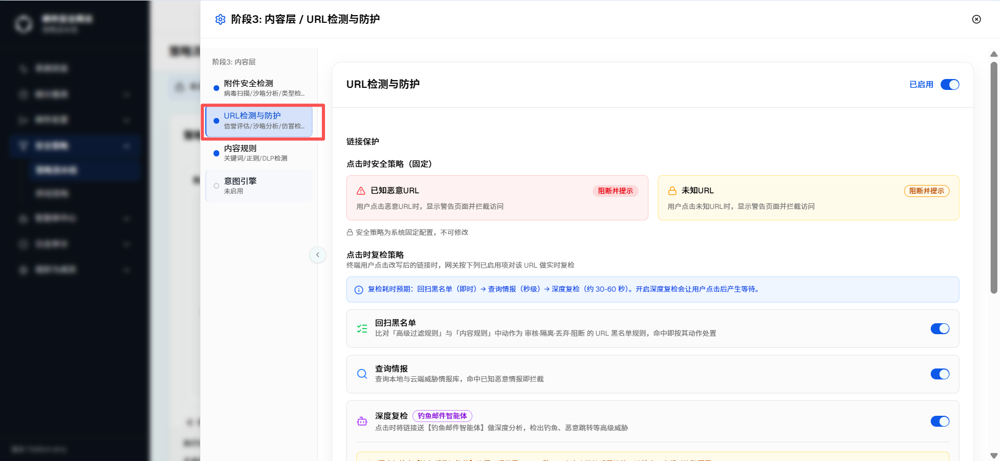
true 覆盖，圆点填充、摘要变为「信誉评估/沙箱分析/仿冒检测」、右上角出现「已启用」——与 S-1 的真实未启用态矛盾，随后闪回。此为缺陷的直接观感。| 文件 / 元素 | 变更前 | 变更后 | 说明 |
|---|---|---|---|
useModuleMaster.ts · 状态 |
仅 enabled（初值 true） |
新增 loaded（初值 false），getSecurityModules 成功后置 true |
新增区分乐观默认与真实状态；return 中导出 loaded |
UrlProtectionPage.tsx · 上报 effect |
onEnabledChange?.(moduleEnabled)（无条件） |
if (moduleLoaded) onEnabledChange?.(moduleEnabled) |
变更依赖数组新增 moduleLoaded |
IntentEnginePage.tsx · 上报 effect |
onEnabledChange?.(moduleEnabled)（无条件） |
if (moduleLoaded) onEnabledChange?.(moduleEnabled) |
变更依赖数组新增 moduleLoaded |
AttachmentSecurityPage.tsx · 上报 effect |
onEnabledChange?.(draft.enabled)（无条件） |
if (!loading) onEnabledChange?.(draft.enabled) |
变更复用已有 loading 状态门控，依赖数组新增 loading |
loading vs useModuleMaster.loaded），因为附件页未使用 useModuleMaster 而是自有 draft 加载逻辑；两者的语义与效果一致——加载完成前不上报。详见差异 D-002。
变更 1 让子页在加载完成前不上报，但此时父级 PolicyPipelinePage 中对应模块的本地状态（urlModuleEnabled / attachmentEnabled / intentEngineEnabled）仍为 undefined。原逻辑在 undefined 时会退回 item.functional（恒为 true），因此首帧仍会把「未启用」模块画成启用——虽然不再「闪回」，但首帧依旧不正确。
security-modules 查询（原仅在 stage5 启用），将其 enabled 门控从 stage5Active 放宽为 drawerOpen，使抽屉一打开就预取模块开关映射 securityModulesMap。在导航渲染时，stage3 三个模块（url / attachment / intentEngine）的圆点 dotOn 与摘要 summaryText 判断改为「本地状态 ?? 父级兜底真值」：本地状态存在（含用户未保存的草稿切换）时优先，否则用 securityModulesMap 中的真实持久化值，只有二者都缺失时才退回 item.functional。这样首帧即用真值渲染。
// PolicyPipelinePage.tsx（导航渲染，简化示意）
const stage3Fallback = securityModulesMap?.[stage3ModuleKey[item.key]];
const urlEnabled = item.key === 'url' ? (urlModuleEnabled ?? stage3Fallback) : undefined;
// …attachment / intentEngine 同理
const dotOn = stage5Enabled !== undefined ? stage5Enabled
: urlEnabled !== undefined ? urlEnabled
: /* … */ item.functional;触发路径：策略流水线 → 点击「内容规则 · 配置」打开阶段3 内容层抽屉 → 展开左侧导航 · 浏览器实拍（浅色主题 / AI版·单租户 / 平台管理员 / 1920×900）
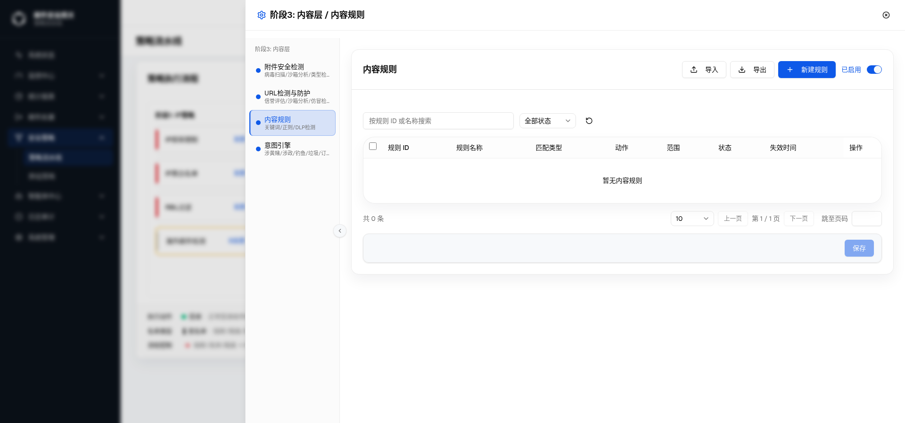
触发路径：从 S-3 起，点击左侧导航「URL检测与防护」→ 右侧内容区切换为该模块详情（链接保护 / 点击时安全策略）· 浏览器实拍（浅色主题 / 1920×900）
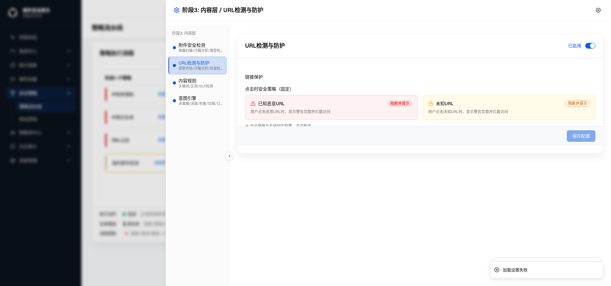
| 元素 | 变更前 | 变更后 | 说明 |
|---|---|---|---|
useQuery(['security-modules']) · enabled |
stage5Active |
drawerOpen |
变更抽屉一打开即预取，供 stage3 首帧兜底 |
导航 dotOn（url/attachment/intentEngine） |
本地状态 undefined → item.functional（恒 true） |
本地状态 ?? securityModulesMap[key] → 最后才 item.functional |
变更新增 stage3ModuleKey 映射（url→url_protection 等） |
导航 summaryText（url/attachment/intentEngine） |
仅依据本地状态判断「未启用」摘要 | 依据「本地状态 ?? 兜底真值」判断，首帧即显示正确摘要 |
变更新增 *EnabledForSummary 中间量 |
import · SecurityModulePage 类型 |
（未导入） | 从 @/lib/api/security-modules 追加 type SecurityModulePage |
新增供 stage3ModuleKey 映射类型标注 |
| 字段 | 内容 |
|---|---|
| 文档编号（文件 ticket） | GT-12731（同文件追加，一文件多需求） |
| 需求名称 | GT-12751 高级过滤规则优化项 |
| 规格类型 | 增量规格（Incremental）· 功能优化 |
| 当前版本 | v3 |
| 生成日期 | 2026-08-03 |
| 路由路径 | /zh/security/pipeline（策略流水线 → 阶段4 综合策略 → 高级过滤规则 → 新建/编辑规则抽屉 → 「条件配置」页签） |
| 组件路径 |
src/components/security/advanced-filter-rules/catalogue.ts、
ConditionConfigPanel.tsx（DescriptionCard / IntentEngineSection / MapValueSection / OrgDepartmentSection / BooleanValueSelect / EnumSection）、
ConditionTree.tsx、
ConditionsTab.tsx、
serde.ts、expression.ts、
src/lib/mock/dispatcher.ts（字段元信息 map_keys_source / 布尔字段派生）、
messages/{zh,en,ru,th}.json
|
| webapp commit | 工作区已提交（意图引擎双模式/多意图、条件目录裁剪、值控件规范化、群组来源修复、发件组织、说明卡增强、选择区滚动修复） |
| 对照 spec commit | not-used |
| 事实源优先级 | 1. 用户当前描述；2. 运行中 webapp 浏览器真实截图；3. webapp 源码 + 单元测试 |
| 浏览器验证状态 | 2026-08-03 演示环境真实截图（浅色主题 / AI版·单租户 / 平台管理员 / Mock 数据 / 阶段4 高级过滤规则抽屉，1575×847）；实拍 S-1 ~ S-7 |
| 变更类型 | 功能优化（条件配置面板增强 + 条件目录裁剪 + 值控件规范化 + 数据源修复 + 布局修复） |
next-intl / messages/*.json），涉及页面文案覆盖中/英/俄/泰四语。共分 变更 3 ~ 变更 10 八个区块。
| # | 用户描述 | 对应区块 | 关键实现 |
|---|---|---|---|
| 1 | 条件说明卡片的变更 | 变更 9 | DescriptionCard 增输入类型/格式示例/单位/有效范围/对象含义/运算符/示例/推荐配置多段 |
| 2 | 选中条件较多时无法再配置其他条件 | 变更 10 | 已选区限高 maxHeight:45% 独立滚动，「添加条件」区 min-h-0 flex-1 始终可见 |
| 3 | 发信人组下拉可筛选「群组策略」发信人组 | 变更 7 | dispatcher 修正 sender_group 的 map_keys_source 指向 /unified-rules/_meta/groups?type=sender |
| 4 | 去掉「功能组」「URL 沙箱结果」「短链展开」 | 变更 5 | catalogue.ts 删 3 条条目，54 → 51 |
| 5 | 发件组织配置实现 | 变更 8 | OrgDepartmentSection 复用组织通讯录部门树多选（panel:'orgDept'） |
| 6 | 加密附件「值」→ 是/否 | 变更 6 | is_encrypted_attachment 布尔字段 → BooleanValueSelect（是/否） |
| 7 | 二维码 ODR 结果「值」→ 成功/失败 | 变更 6 | image_qr_code_result: ['success','fail'] + i18n qrResultValues |
| 8 | 信封-头 From 一致性「值」→ 一致/不一致 | 变更 6 | envelope_header_mismatch: ['match','mismatch'] + i18n envelopeHeaderConsistencyValues |
| 9 | Mail From 为空「值」→ 是/否 | 变更 6 | mailfrom_empty 布尔字段 → BooleanValueSelect（是/否） |
| 10 | 病毒扫描结果「值」→ 有毒/无毒 | 变更 6 | virus_scan_result: ['infected','clean'] + i18n virusScanResultValues |
「意图引擎」条件（catalogue key comprehensiveEngineResult / 字段 cac_tag）与阶段3 内容层的意图引擎模块同源。该模块的 detection_mode / threshold_segments 均挂在「单个意图」之下（见 types/intent-engine.ts 的 IntentSingleConfig），阶段3 的 IntentDirectionConfig 本身就是 5 个意图（钓鱼 / 涉政 / 垃圾 / 诈骗 / 订阅）各自独立配置。为与引擎 1:1 对齐，该条件从普通枚举单选升级为专属 intentEngine 面板。
classification（命中该意图即匹配）或 分段阈值 threshold（命中该意图且置信度分数落入 [lo, hi] ⊆ [0,1] 区间）；意图:模式[:lo,hi]」以 ; 连接，例如 phishing:threshold:0.60,0.90;spam:classification，复用现有 string value 模型 / serde 往返；单个 leaf.operator 固定为 within 伞值，分类 / 阈值细节下沉到 value 编码由面板与预览解析；phishing:classification）天然是「只有一条条目」的合法子集，向后兼容、无需迁移。
完整性校验（expression.ts）：至少配置 1 个意图，否则阻断性不完整；任一分段阈值条目端点缺失 → 阻断，端点齐全后再校验「大小顺序 / 超出 [0,1] 范围」提示。表达式预览把每个意图渲染为「意图」（分类优先）或「意图(lo~hi)」（分段阈值）。
// serde.ts — 多意图列表编解码（复用单条 parse/encode）
// phishing:threshold:0.60,0.90;spam:classification
parseIntentEngineList(value: string): IntentEngineValue[] // 按 ';' 切分、去重、丢弃空条目
encodeIntentEngineList(entries): string // 以 ';' 连接，同意图去重
export const INTENT_ENGINE_OPERATOR = { classification: 'within', threshold: 'between' };触发路径：阶段4 综合策略 → 高级过滤规则 → 新建规则 → 「条件配置」页签 → 添加「意图引擎」条件 → 添加「钓鱼」「垃圾」两个意图，分别选「分类优先」「分段阈值」· 浏览器实拍（浅色主题 / AI版·单租户 / 平台管理员 / Mock / 1575×847）
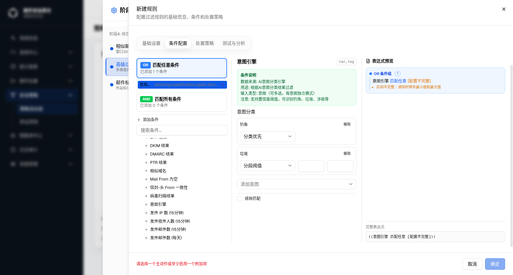
[0,1] 最小/最大值区间输入），每行右侧有「移除」，底部「添加意图」下拉。左侧条件序列化为 phishing:classification;spam:threshold:…；右侧「表达式预览」实时呈现「意图引擎 匹配任意」及分段阈值端点未填时的「区间不完整：请同时填写最小值和最大值」校验提示。| 文件 / 元素 | 变更前 | 变更后 | 说明 |
|---|---|---|---|
catalogue.ts · comprehensiveEngineResult 面板 |
panel: 'select'（普通枚举单选） |
panel: 'intentEngine'（专属面板） |
变更select 计数 -1、新增 intentEngine=1 |
ConditionConfigPanel.tsx · IntentEngineSection |
单意图两级（意图 + 模式） | 多意图列表：每行意图 + 模式下拉 + 阈值区间 + 移除，底部「添加意图」 | 变更testid：config-intent-list / config-intent-row-* / config-intent-mode-* / config-intent-threshold-* / config-intent-add |
serde.ts · 编解码 |
仅单条 parse/encodeIntentEngineValue |
新增 parseIntentEngineList / encodeIntentEngineList（以 ; 连接、去重、丢空） |
新增单条 codec 保留，作为列表内每条的复用单元 |
expression.ts · 取值 / 完整性 |
单意图取值与校验 | 多条目取值（意图 / 意图(lo~hi)）+ 至少 1 意图、每阈值条目端点/顺序/范围校验 | 变更预览逐意图渲染；任一条目不完整则整条不完整 |
ConditionTree.tsx · 默认 leaf |
单意图空值编码 | 多意图空列表（value=''，operator within 伞值） |
变更空列表 → 预览判为不完整，与枚举单选起始态一致 |
messages/{zh,en,ru,th}.json · i18n |
无「添加意图 / 移除」动作词；inputType.intentEngine 缺失（渲染时抛 MISSING_MESSAGE） |
新增 v3Conditions.intentAddLabel / intentRemoveLabel；补齐 inputType.intentEngine |
新增四语齐全；意图名 / 描述 / 检测模式复用 intentEngine.* 命名空间 |
serde.test.ts · 编解码测试 |
仅单条 codec 断言 | 新增「多意图 list codec」describe：多意图往返、同意图去重（保留后写）、空条目丢弃、单值向后兼容子集 | 新增断言 phishing:threshold:0.6,0.9;spam:classification 等往返一致 |
ConditionConfigPanel.test.tsx · 面板意图用例 |
旧 testid（config-intent-type / config-intent-mode / config-intent-type-desc / config-intent-threshold）断言单意图两级 UI |
重写 3 条用例匹配列表式 UI（config-intent-add、行内 config-intent-mode-* / config-intent-threshold-*、多意图行），新增「描述卡渲染 inputType 行不抛错」回归断言 |
变更覆盖多意图行渲染 + D-006 回归防护 |
intentEngine.* i18n 命名空间，不重复造词；本次仅新增「添加意图 / 移除」两个动作词与补齐缺失的输入类型键。详见差异 D-004、D-005。
serde.test.ts）、意图引擎面板多意图行渲染与描述卡回归（ConditionConfigPanel.test.tsx）、条件目录计数不变量（catalogue.test.ts）。到意图引擎面板的 UI 深链依赖登录态与后端；本次已在 AI版·单租户 / Mock 数据环境完成浏览器实拍（S-1），真实后端「保存 / 回显」链路回归见待确认 Q-003。
按产品要求，从「高级过滤规则 → 条件配置 → 安全检测」分组移除两个条件：RBL 结果（catalogue key rblResult / 字段 rbl）与显示名仿冒（key displayNameSpoof / 字段 exec_imp），二者原均为 panel: 'select' 枚举单选。
catalogue.ts 中这两条条目定义，并删除四语 advancedRulesFeature.v3Conditions 命名空间下对应的两个文案键；同步更新 catalogue.test.ts 的计数不变量。裁剪后：条件目录总数 51 → 49、安全检测 20 → 18、select 面板 12 → 10。
emailDisposal.*.rblResult、认证仿冒页的 displayNameSpoof（一整块对象配置）——均属不同命名空间，原样保留、未受影响。本次仅删除 v3Conditions 命名空间下的两个字符串键。
触发路径：阶段4 综合策略 → 高级过滤规则 → 新建规则 → 「条件配置」页签 → 展开「安全检测（18）」分组 · 浏览器实拍（浅色主题 / 1575×847）
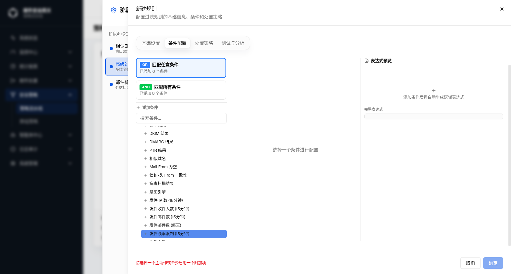
触发路径：阶段4 综合策略 → 高级过滤规则（列表页），查看模块副标题与底部条件类型清单 · 浏览器实拍（浅色主题 / 1575×847）
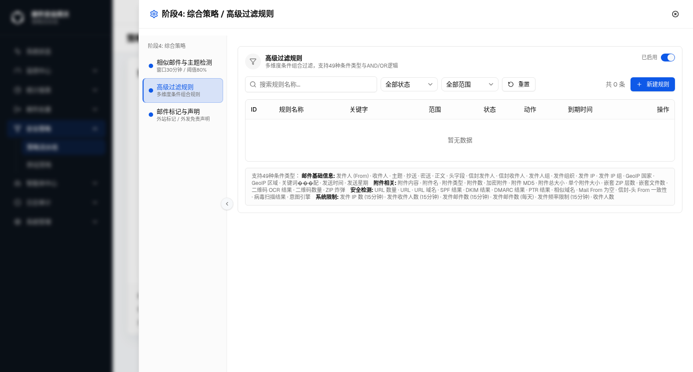
| 文件 / 元素 | 变更前 | 变更后 | 说明 |
|---|---|---|---|
catalogue.ts · rblResult |
（已删除） | 移除安全检测 -1 | |
catalogue.ts · displayNameSpoof |
（已删除） | 移除安全检测 -1 | |
messages/{zh,en,ru,th}.json · v3Conditions.rblResult / displayNameSpoof |
各含「RBL 结果」/「显示名仿冒」文案（四语） | （已删除，四语） | 移除其他命名空间同名键保留 |
catalogue.test.ts · 计数不变量 |
总数 51 / security 20 / select 12 | 总数 49 / security 18 / select 10 | 变更13 项目录测试通过 |
按产品要求，从条件目录移除三个条件：功能组（panel:'featureGroup'）、URL 沙箱结果（key urlSandbox / 字段 url_sandbox）、短链展开（key shortLink / 字段 short_link）。删除 catalogue.ts 对应条目定义与四语 v3Conditions 文案键，并更新 catalogue.test.ts 计数不变量。
catalogue.test.ts 断言 byPanel('featureGroup') === 0。
| 移除条件 | catalogue 定义（变更前） | 变更后 | 说明 |
|---|---|---|---|
| 功能组 | （已删除） | 移除featureGroup 面板归零 | |
URL 沙箱结果 urlSandbox | （已删除） | 移除security -1 | |
短链展开 shortLink | （已删除） | 移除security -1 | |
四语 i18n v3Conditions.* | 各含三条文案 | （已删除，四语） | 移除 |
将 5 个条件的「值」控件从自由文本 / 不当枚举，规范化为语义明确的二态控件。字段的取值域来自 dispatcher.ts 的字段元信息（布尔字段派生 BooleanValueSelect，枚举字段给定二元 options），控件由 ConditionConfigPanel 按字段类型自动选择；显示文案全部走四语 i18n。
| 条件 | 字段 | 值（变更前 → 变更后） | 控件 / i18n 键 |
|---|---|---|---|
| 加密附件 | is_encrypted_attachment | 文本/枚举 → 是 / 否 | BooleanValueSelect · booleanValues.{true,false} |
| Mail From 为空 | mailfrom_empty | 枚举 → 是 / 否 | BooleanValueSelect · booleanValues.{true,false} |
| 二维码 ODR 结果 | image_qr_code_result | 多值枚举 → 成功 / 失败 | EnumSection · qrResultValues.{success,fail} |
| 信封-头 From 一致性 | envelope_header_mismatch | 枚举 → 一致 / 不一致 | EnumSection · envelopeHeaderConsistencyValues.{match,mismatch} |
| 病毒扫描结果 | virus_scan_result | 枚举 → 有毒 / 无毒 | EnumSection · virusScanResultValues.{infected,clean} |
envelope_header_mismatch 语义为「是否不一致」，值 match 显示「一致」、mismatch 显示「不一致」，UI 文案与字段布尔方向的映射由 EnumSection 的 options 顺序保证，避免正反颠倒。详见差异 D-009。
触发路径：条件配置 → 添加「病毒扫描结果」→ 展开「值」下拉 · 浏览器实拍（浅色 / 1575×847）
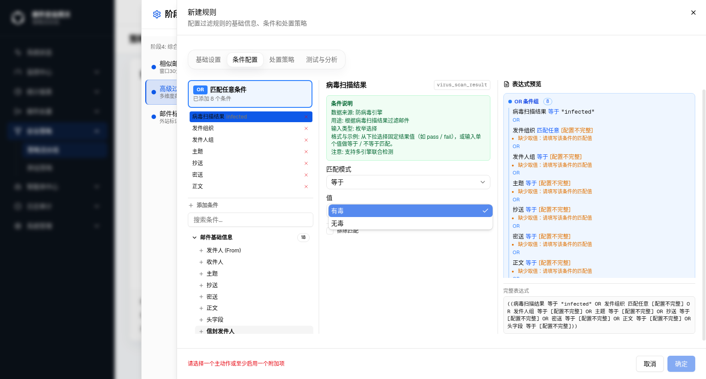
virus_scan_result）的「值」下拉仅含有毒 / 无毒两项；右侧说明卡显示数据来源、运算符等（见变更 9）。加密附件 / Mail From 为空的「是 / 否」、二维码的「成功 / 失败」、一致性的「一致 / 不一致」为同类二态控件。| 文件 / 元素 | 变更前 | 变更后 | 说明 |
|---|---|---|---|
dispatcher.ts · 字段元信息 | 上述字段未标记布尔 / 未给二元枚举 | is_encrypted_attachment / mailfrom_empty 标为布尔；三枚举字段给定二元 options | 变更取值域收敛 |
ConditionConfigPanel.tsx · 值控件选择 | 文本 / 多值下拉 | 布尔字段 → BooleanValueSelect（是/否）；二元枚举 → EnumSection | 变更按字段类型自动选控件 |
messages/{zh,en,ru,th}.json | 缺 booleanValues / qrResultValues / envelopeHeaderConsistencyValues / virusScanResultValues | 四语补齐上述枚举文案 | 新增四语齐全 |
配置「发信人组」条件（panel:'group' / 字段 sender_group）时，其对象下拉应列出「群组策略」模块中类型为「发信人组」的群组，但此前下拉为空 / 未正确取到群组来源。修复方式：在 dispatcher.ts 为 sender_group 字段补正 map_keys_source，指向群组策略的发信人组元数据端点，使 MapValueSection 的 useMapKeys 能拉取到候选群组。
sender_group 的字段元信息 map_keys_source 指向群组策略发信人组列表（type=sender）；对象下拉即渲染出「研发部门」「合作伙伴域名」等真实群组项，选定后以 map 语义 + 布尔命中值（是/否）组成条件。
触发路径：条件配置 → 添加「发件人组」→ 展开对象下拉 · 浏览器实拍（浅色 / 1575×847）
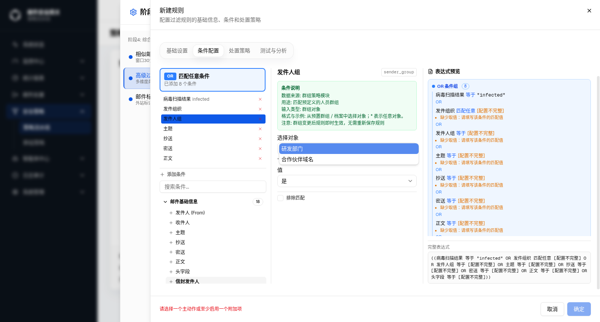
sender_group）对象下拉列出来自群组策略模块的发信人组（如「研发部门」「合作伙伴域名」）；右侧说明卡「数据来源: 群组策略模块」。选定群组后的命中值为布尔（是/否）。| 文件 / 元素 | 变更前 | 变更后 | 说明 |
|---|---|---|---|
dispatcher.ts · sender_group.map_keys_source | 缺失 / 未指向群组策略 | 指向群组策略发信人组元数据（type=sender） | 修复下拉可取到候选群组 |
MapValueSection · useMapKeys | 无数据源 → 空下拉 | 正确拉取群组列表并渲染 | 变更说明卡标注来源 |
实现「发件组织」条件（panel:'orgDept' / 字段 sender_dept_path）的配置面板：复用组织通讯录的部门树，支持树形多选，命中「发件人所属部门落在所选部门（及子部门）范围内」。
触发路径：条件配置 → 添加「发件组织」→ 部门树 · 浏览器实拍（浅色 / 1575×847）
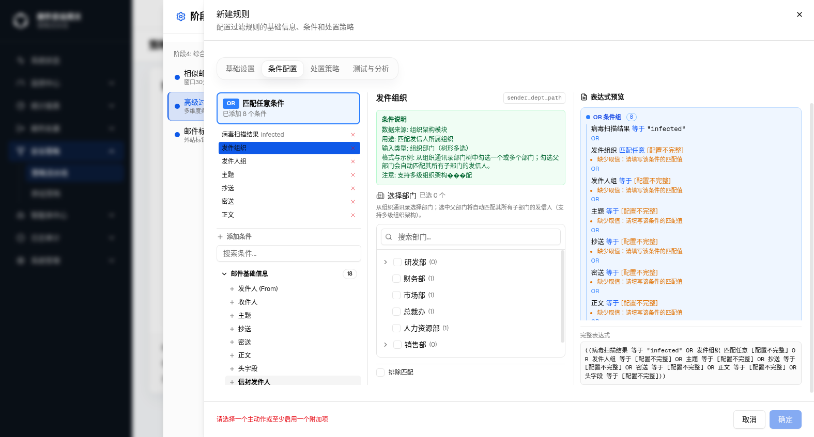
sender_dept_path）的组织部门树多选控件，展示「研发部 / 市场部」等部门层级；右侧说明卡标注输入类型为「组织部门（树形多选）」（见变更 9）。| 文件 / 元素 | 变更前 | 变更后 | 说明 |
|---|---|---|---|
catalogue.ts · 发件组织 | 无面板 / 未实现 | panel:'orgDept'、字段 sender_dept_path | 新增 |
ConditionConfigPanel.tsx · OrgDepartmentSection | — | 复用组织通讯录部门树、树形多选 | 新增testid config-orgdept-* |
条件配置面板右侧的说明卡（DescriptionCard）从「仅一句描述」增强为结构化多段信息，帮助用户理解每个条件如何取值与判定。展示项按字段类型动态出现：
inputType.*：文本 / 数值 / 枚举 / 布尔 / 组织部门（树形多选）/ 意图（可多选，每意图独立模式）等）；meta.recommend）。| 元素 | 变更前 | 变更后 | 说明 |
|---|---|---|---|
DescriptionCard | 单行描述文本 | 输入类型 / 数据来源 / 格式示例 / 单位 / 有效范围 / 对象含义 / 运算符 / 示例 / 推荐配置多段 | 变更按字段类型动态渲染 |
i18n v3Conditions.inputType.* 等 | 部分缺失（含 intentEngine） | 四语补齐各输入类型与说明段标题 | 新增 |
新建/编辑规则的「条件配置」页签中，已选条件列表与底部「添加条件」（搜索 + 目录）共处一个纵向容器。当已选条件较多时，已选列表把「添加条件」区挤出可视区且整体不滚动，导致无法再选择 / 添加其他条件。修复方式：为已选条件区设定上限高度并独立滚动，「添加条件」区以 flex-1 min-h-0 常驻可见，二者各自滚动。
flex flex-col 容器——已选条件区 max-h:45%（约） + overflow-y-auto 独立滚动；「添加条件」区 flex-1 min-h-0 常驻并内部滚动。无论已选多少条，条件搜索框与目录始终可见可用。
触发路径：条件配置 → 连续添加 8 个条件（发件人组 / 发件组织 / 病毒扫描 / 主题 / 抄送 / 密送 / 正文 / 头字段）· 浏览器实拍（浅色 / 1575×847）
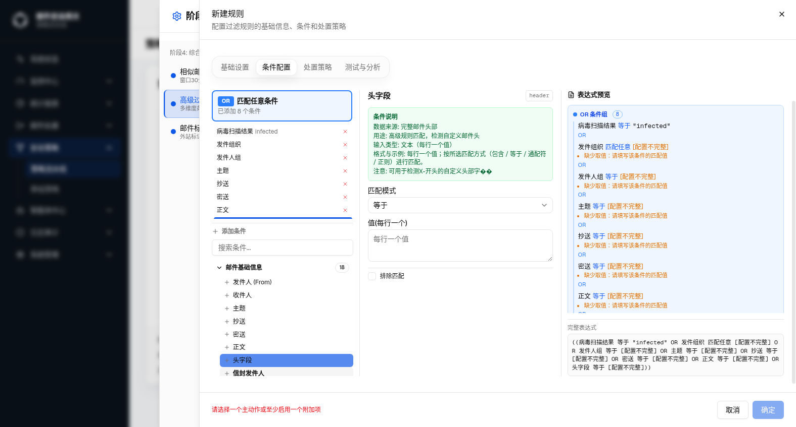
| 元素 | 变更前 | 变更后 | 说明 |
|---|---|---|---|
| 已选条件区容器 | 随内容无限增高、无独立滚动 | 限高 + overflow-y-auto 独立滚动 | 修复 |
| 「添加条件」区容器 | 被已选列表挤出可视区 | flex-1 min-h-0 常驻可见、内部滚动 | 修复搜索/目录始终可用 |
| 需求名称 | GT-12753 高级过滤规则——新建规则——处置策略：免责声明 / 外部邮件提醒，去掉「自定义模板」 |
| 生成日期 | 2026-08-04 |
| 路由路径 | /zh/security/pipeline（策略流水线 → 阶段4 综合策略 → 高级过滤规则 → 新建/编辑规则抽屉 → 「处置策略」页签 → 附加策略） |
| 组件路径 |
src/components/security/advanced-filter-rules/AddonsPanel.tsx（defaultAddonParams / AddonParamsForm）、
ActionSummary.tsx（附加策略摘要）、
messages/{zh,en,ru,th}.json
|
| 变更类型 | 功能移除（去掉「自定义模板」配置） |
| webapp commit | 工作区已提交（免责声明 / 外部邮件提醒去模板） |
| 浏览器验证状态 | 2026-08-04 演示环境真实截图（浅色 / AI版·单租户 / 平台管理员 / Mock 数据 / 阶段4 高级过滤规则抽屉 → 处置策略，1737×1046）；实拍 S-1 / S-2 |
addon_policy）移除「声明模板」（标准 / 法务 / 自定义），外部邮件提醒移除「模板」（标准 / 安全提醒 / 自定义）。两者均仅保留「插入位置」下拉。改动使用项目 next-intl 框架，涉及页面文案覆盖中/英/俄/泰四语。此二变更对应目录变更 11、12。
勾选「免责声明」（addon_policy）附加策略后，其配置区原有「声明模板」（标准模板 / 法务模板 / 自定义）与「插入位置」两个下拉。本次移除「声明模板」下拉，配置区仅保留「插入位置」（正文顶部 / 正文底部 / 邮件头，默认正文底部）。默认参数不再写入 template 字段；右侧「配置摘要 / 逻辑表达式预览」中的免责声明行由原「模板名」改为显示「插入位置」。
触发路径：新建规则 → 处置策略 → 附加策略勾选「免责声明」· 浏览器实拍（浅色 / AI版·单租户 / 平台管理员 / 1737×1046）
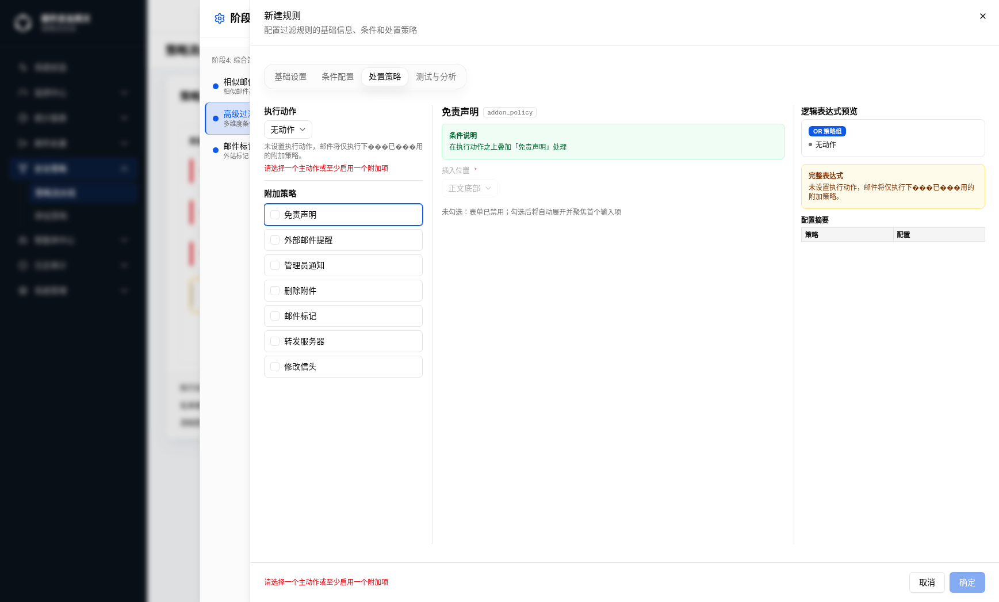
addon_policy 配置区仅含「插入位置」（正文底部），不再有「声明模板」下拉。对照修改前该区曾有「声明模板：标准模板」下拉（红框位置，见需求截图）。| 文件 / 元素 | 变更前 | 变更后 | 说明 |
|---|---|---|---|
AddonsPanel.tsx · defaultAddonParams('disclaimer') | { template: 'standard', position: 'body_bottom' } | { position: 'body_bottom' } | 移除不再初始化 template |
AddonsPanel.tsx · 免责声明表单 | 「声明模板」SelectField（standard/legal/custom）+ 「插入位置」SelectField | 仅「插入位置」SelectField | 移除模板下拉整块删除 |
ActionSummary.tsx · disclaimer 摘要 | 返回「模板名 + 插入位置」 | 仅返回「插入位置」 | 变更不再引用已删的 template 字段 |
messages/{zh,en,ru,th}.json | 含 addons.disclaimerTemplate / ...Standard / ...Legal / ...Custom | 四语删除上述 4 个键 | 移除四语齐删，无残留引用 |
勾选「外部邮件提醒」附加策略后，其配置区原有「模板」（标准模板 / 安全提醒 / 自定义）与「插入位置」两个下拉。本次移除「模板」下拉，配置区仅保留「插入位置」（默认正文顶部）与底部提示「外部邮件提醒仅对判定为外部发件人的邮件生效」。默认参数不再写入 template 字段；右侧摘要由原「模板名」改为显示「插入位置」。
触发路径：新建规则 → 处置策略 → 附加策略勾选「外部邮件提醒」· 浏览器实拍（浅色 / AI版·单租户 / 平台管理员 / 1737×1046）
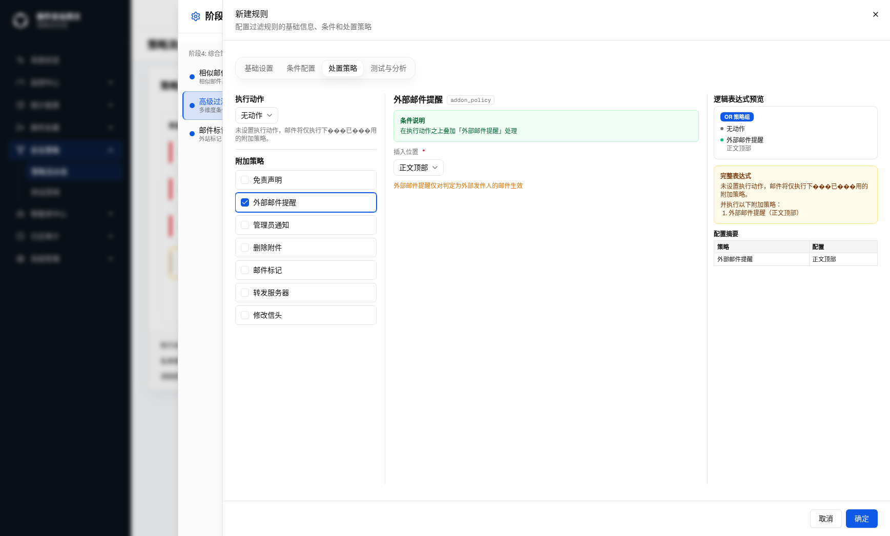
addon_policy 配置区仅含「插入位置」（正文顶部）与提示文案，不再有「模板」下拉；右侧���配置摘要」显示「外部邮件提醒 → 正文顶部」，「逻辑表达式预览」显示「外部邮件提醒（正文顶部）」。| 文件 / 元素 | 变更前 | 变更后 | 说明 |
|---|---|---|---|
AddonsPanel.tsx · defaultAddonParams('externalReminder') | { template: 'standard', position: 'body_top' } | { position: 'body_top' } | 移除不再初始化 template |
AddonsPanel.tsx · 外部邮件提醒表单 | 「模板」SelectField（standard/security/custom）+ 「插入位置」SelectField | 仅「插入位置」SelectField | 移除模板下拉整块删除 |
ActionSummary.tsx · externalReminder 摘要 | 返回「模板名」 | 返回「插入位置」（顶部 / 底部） | 变更不再引用已删的 template 字段 |
messages/{zh,en,ru,th}.json | 含 addons.externalReminderTemplate / ...Standard / ...Security / ...Custom | 四语删除上述 4 个键 | 移除四语齐删，无残留引用 |
externalReminderTemplateDefault / disclaimerTemplateDefault 为改动前即无引用的历史死键，不属本次范围，未删除。
| 需求名称 | GT-11675 附件安全检测-图片识别，OCR深度检测功能缺失 |
| 生成日期 | 2026-08-04 |
| 路由路径 | /zh/security/pipeline（策略流水线 → 阶段3 内容层 → 附件安全检测 → 「图片识别」页签 → 图片OCR检测） |
| 组件路径 |
src/components/security/attachment-security/ImageDetectTab.tsx、
src/types/attachment-security.ts、
src/lib/api/attachment-security.ts（getImageDetectConfig）、
AttachmentSecurityPage.i18n-parity.test.ts、
messages/{zh,en,ru,th}.json
|
| 变更类型 | 功能移除（去掉从未实现的深度检测）+ 文案调整 + 交互优化 |
| webapp commit | 02a906d |
| 浏览器验证状态 | 2026-08-04 演示环境真实截图（浅色 / AI版·单租户 / 平台管理员 / Mock 数据 / 阶段3 附件安全检测 → 图片识别，1694×1046）；实拍 S-1 / S-2 |
| 功能 / 元素 | 变更 | AI-单 平台管理员 | 传统-单 平台管理员 | 云-多 租户管理员 | AI-多 租户管理员 | 传统-多 租户管理员 |
|---|---|---|---|---|---|---|
| 图片OCR检测 · 检测模式下拉（不检测 / 检测） | #13 | ✅ | ✅ | ? | ? | ? |
| #13 | ❌ | ❌ | ❌ | ❌ | ❌ | |
| 图片OCR检测 · 检测数量上限输入（检测模式=检测时可编辑） | #14 | ✅ | ✅ | ? | ? | ? |
| 图片OCR检测 · 检测数量上限输入（检测模式=不检测时禁用） | #14 | 🔒 | 🔒 | ? | ? | ? |
? 标记项：多租户形态下租户管理员对该配置的可见/可编辑性本次未逐一验证，列入待确认 Q-006。本次实拍在 AI版·单租户 / 平台管理员下完成。
「图片OCR检测 → 检测模式」原为三项下拉：不检测（none）、轻度检测（仅印刷体）（light）、深度检测（手写+印刷）（deep，一直置灰不可选）。经核查，OCR 链路只有单一 pytesseract 路径，深浅模式在执行层完全相同，deep 属从未实现的占位项。
deep 下拉项，检测模式收窄为「不检测 / 检测」两项；唯一有效模式的文案由「轻度检测（仅印刷体）」精简为「检测」。类型 ocr_mode 由 'none' | 'light' | 'deep' 收窄为 'none' | 'light'；读取配置时对历史租户可能残留的 ocr_mode='deep' 做归一化，映射为 'light'，避免下拉空白。
触发路径：/zh/security/pipeline → 阶段3 附件安全检测 → 「图片识别」页签 → 点击「图片OCR检测 · 检测模式」下拉 · 浏览器实拍（浅色 / AI版·单租户 / 平台管理员 / 1694×1046）
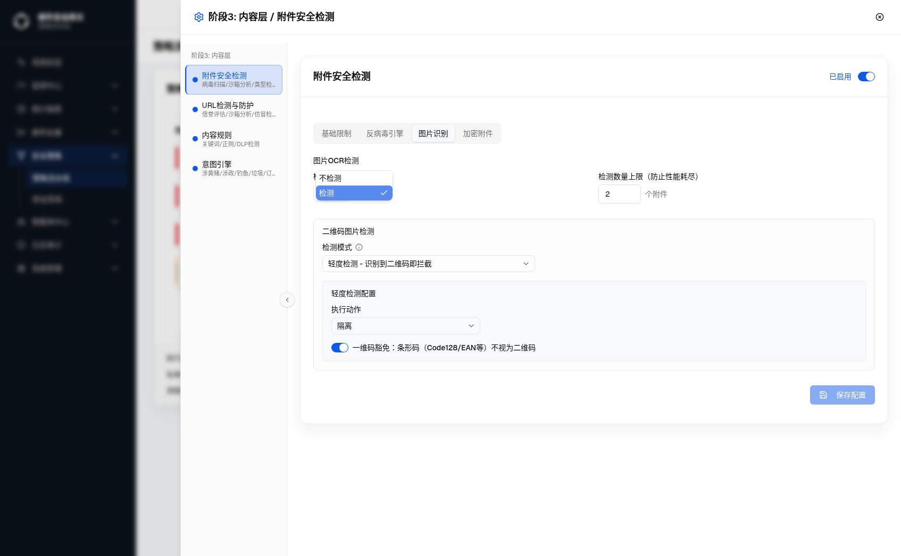
| 文件 / 元素 | 变更前 | 变更后 | 说明 |
|---|---|---|---|
ImageDetectTab.tsx · 检测模式 SelectContent | none + light + deep（disabled）三项 | none + light 两项 | 移除删除 deep 的 SelectItem 与占位注释 |
attachment-security.ts · 类型 ocr_mode | 'none' | 'light' | 'deep' | 'none' | 'light' | 变更收窄联合类型 |
attachment-security.ts · getImageDetectConfig | 直接强转返回 | 读取时 ocr_mode==='deep' 归一为 'light' | 新增历史数据兼容防御 |
四语 imageDetect.ocrMode_light | zh「轻度检测（仅印刷体）」等 | zh「检测」/ en「Detection」/ ru「Обнаружение」/ th「ตรวจจับ」 | 变更重命名 |
四语 imageDetect.ocrMode_deep | 存在（深度检测文案） | 四语删除 | 移除 |
四语 tooltips.ocrMode | 「轻度模式仅识别印刷体，深度模式同时识别手写与印刷…」 | 「检测并识别图片中的印刷体文字内容」 | 变更去掉深浅对比 |
四语 imageDetect.ocrSendHint | ���外发方向建议启用深度检测…」 | 「外发方向建议启用，防截图泄密」（去深度） | 变更该键当前未被渲染，属死键，一并去深度表述 |
AttachmentSecurityPage.i18n-parity.test.ts · 必需键列表 | 含 ocrMode_deep | 移除 ocrMode_deep | 移除同步测试断言 |
qr_mode 中的 deep（识别到二维码并深度校验）是真实功能，与本次 OCR 的 deep 无关，未改动；历史死键 ocrMode_deep 之外的 ...TemplateDefault 类键不在本需求范围。
「检测数量上限（防止性能耗尽）」是"每封邮件最多对几个附件做 OCR"的性能保护参数，仅在真正执行 OCR（检测模式=检测）时才有意义。原实现下该输入框无论检测模式如何始终可编辑，选「不检测」时仍可改，属逻辑瑕疵。
ocr_mode === 'none'（不检测）时，禁用「检测数量上限」输入框（disabled），并在其下方显示灰字提示「选择「检测」后可配置」；切换回「检测」时输入框恢复可编辑、提示消失。采用禁用而非隐藏，使「检测模式 / 检测数量上限」并排两列布局在模式切换时保持稳定、不跳动。
触发路径：图片OCR检测 → 检测模式选「不检测」 · 浏览器实拍（浅色 / AI版·单租户 / 平台管理员 / 1694×1046）
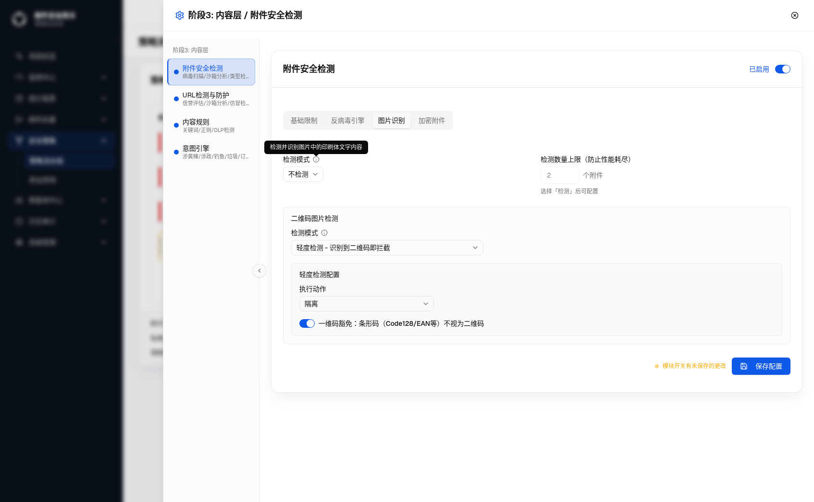
| 文件 / 元素 | 变更前 | 变更后 | 说明 |
|---|---|---|---|
ImageDetectTab.tsx · 派生变量 | 无 | const ocrDisabled = config.ocr_mode === 'none' | 新增 |
ImageDetectTab.tsx · 数量上限 Input | 始终可编辑 | 增加 disabled={ocrDisabled} | 变更 |
ImageDetectTab.tsx · 提示文本 | 无 | ocrDisabled 为真时渲染灰字 <p>（testid ocr-max-count-disabled-hint） | 新增 |
四语 imageDetect.ocrLimitDisabledHint | 不存在 | zh「选择「检测」后可配置」/ en「Configurable after selecting "Detection"」/ ru / th 对应 | 新增四语齐全 |
AttachmentSecurityPage.i18n-parity.test.ts · 必需键列表 | 无该键 | 新增 ocrLimitDisabledHint | 新增登记必需键 |
| 元素 | 类型 | 默认值 / 边界 | 禁用条件 | i18n key |
|---|---|---|---|---|
| 检测数量上限输入 | number input（min=1，失焦 clamp 到 ≥1 整数） | 默认 2 个附件 | ocr_mode === 'none' 时禁用 | imageDetect.ocrLimit / imageDetect.attachments |
| 禁用提示 | 灰字说明（仅禁用时显示） | — | 仅 ocr_mode === 'none' 时渲染 | imageDetect.ocrLimitDisabledHint |
| 需求名称 | GT-11651 内容规则-执行动作调整 |
| 生成日期 | 2026-08-04 |
| 路由路径 | /zh/security/pipeline（策略流水线 → 阶段3 内容层 → 内容规则 → 「新建规则 / 编辑规则」抽屉 → 执行动作） |
| 组件路径 |
src/components/security/content-rules/ContentRuleDrawer.tsx（ACTIONS 数组、actionLabel / actionHint 助手、执行动作 Select）、
messages/{zh,en,ru,th}.json（contentRules.action*）
|
| 变更类型 | 选项移除 + 文案调整 + 交互优化（下拉项增加说明） |
| webapp commit | 02a906d |
| 浏览器验证状态 | 2026-08-04 演示环境真实截图（浅色 / AI版·单租户 / 平台管理员 / Mock 数据 / 阶段3 内容规则 → 新建规则抽屉，1694×1046）；实拍 S-1 |
| 功能 / 元素 | 变更 | AI-单 平台管理员 | 传统-单 平台管理员 | 云-多 租户管理员 | AI-多 租户管理员 | 传统-多 租户管理员 |
|---|---|---|---|---|---|---|
| 执行动作下拉（投递 / 隔离 / 审核 / 拒收 / 丢弃，各带说明） | #15~#17 | ✅ | ✅ | ? | ? | ? |
| #15 | ❌ | ❌ | ❌ | ❌ | ❌ |
? 标记项：多租户形态下租户管理员对内容规则抽屉执行动作的可见/可编辑性本次未逐一验证，列入待确认 Q-007。本次实拍在 AI版·单租户 / 平台管理员下完成。
内容规则「执行动作」下拉原有 6 项：deliver（放行）、tag_deliver（标记投递）、isolate（隔离）、review（审核）、block（阻断）、discard（丢弃）。本次从 ACTIONS 数组移除 tag_deliver，下拉减为 5 项。
tag_deliver，保留 deliver（放行 / 投递）；其余项与现有顺序保持不变。ContentRuleDrawer.tsx 的 ACTIONS 数组删除 'tag_deliver' 一项即可，下拉渲染由该数组驱动，自动少一项。
ContentRuleUiAction 类型仍保留 tag_deliver，抽屉中针对历史数据命中 tag_deliver 的「标记配置块」渲染逻辑亦保留（仅历史规则会命中），本需求不删除，避免越界影响其它功能。
原下拉项仅显示单行标题，「阻断」语义偏技术且与实际 SMTP 行为不完全对齐。本次将 block 的标题由「阻断」改为「拒收」，并为每种执行动作补充一句灰字说明，使下拉项呈「标题 + 说明」两行式，帮助管理员理解每种处置的实际效果。
actionHint() 助手，与已有 actionLabel() 并列，按动作名动态取 contentRules.action{Suffix}Hint；SelectItem 渲染改为两行——第一行 actionLabel（沿用动作色），第二行 actionHint（text-xs text-muted-foreground）；SelectTrigger 通过 SelectValue 只显示当前项标题（不显示说明），保持触发器紧凑。
触发路径：/zh/security/pipeline → 阶段3 内容规则 → 「新建规则」 → 点击「执行动作」下拉 · 浏览器实拍（浅色 / AI版·单租户 / 平台管理员 / 1694×1046）
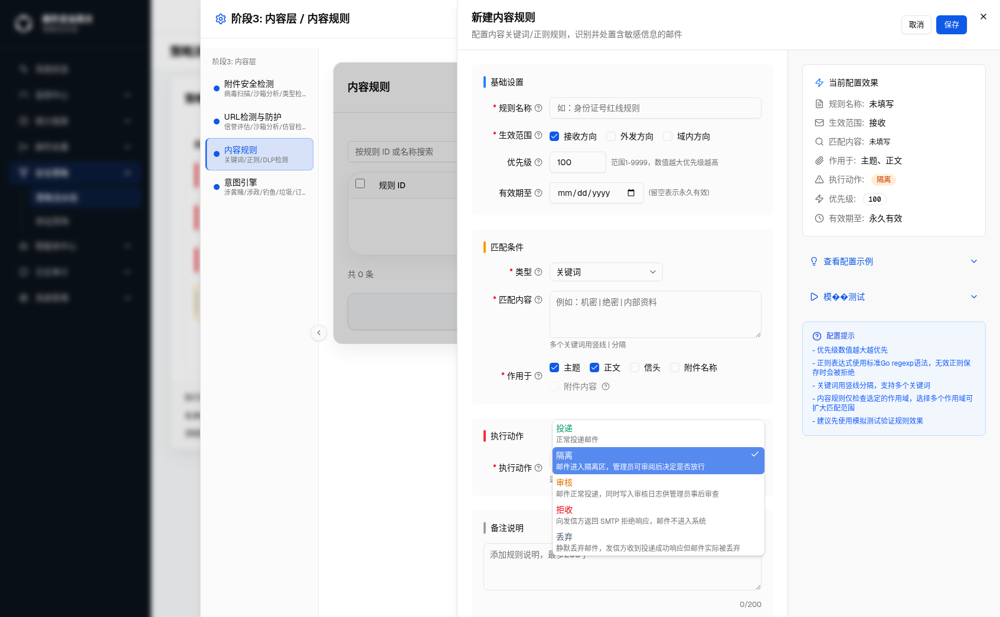
| 文件 / 元素 | 变更前 | 变更后 | 说明 |
|---|---|---|---|
ContentRuleDrawer.tsx · actionHint() | 无 | 按动作名取 contentRules.action{Suffix}Hint | 新增取值助手 |
ContentRuleDrawer.tsx · SelectItem | 单行 label | 两行：label + hint（flex-col，hint 为 text-xs text-muted-foreground） | 变更 |
ContentRuleDrawer.tsx · SelectTrigger | <SelectValue /> | <SelectValue> 内只渲染 label | 变更触发器仅显示标题 |
四语 contentRules.actionBlock | zh「阻断」/ en「Block」/ ru「Блокировать」/ th「บล็อก」 | zh「拒收」/ en「Reject」/ ru「Отклонить」/ th「ปฏิเสธการรับ」 | 变更重命名 |
四语 contentRules.actionBlockHint | zh「在 SMTP 会话中拒绝邮件」等 | zh「向发信方返回 SMTP 拒绝响应，邮件不进入系统」 | 变更 |
四语 contentRules.actionDiscardHint | zh「静默丢弃邮件」等 | zh「静默丢弃邮件，发信方收到投递成功响应但邮件实际被丢弃」 | 变更 |
四语 contentRules.actionIsolateHint | zh「将邮件移入隔离区」等 | zh「邮件进入隔离区，管理员可审阅后决定是否放行」 | 变更 |
四语 contentRules.actionReviewHint | zh「等待管理员人工审核」等 | zh「邮件正常投递，同时写入审核日志供管理员事后审查」 | 变更 |
block 等 key）与后端契约不变，仅调整展示文案与说明；deliver 的 actionDeliverHint（「正常投递邮件」）沿用不变。
执行动作 deliver 的标题由「放行」改为「投递」，更贴合"邮件正常投递给收件人"的语义，与说明「正常投递邮件」一致。
deliver：zh contentRules.actionDeliver 由「放行」改为「投递」；th 由「ส่งต่อ（转发）」对齐为「ส่งมอบ（投递）」；en「Deliver」/ ru「Доставить」本即"投递"语义，保持不变。
| 文件 / 元素 | 变更前 | 变更后 | 说明 |
|---|---|---|---|
zh contentRules.actionDeliver | 放行 | 投递 | 变更 |
th contentRules.actionDeliver | ส่งต่อ（转发） | ส่งมอบ（投递） | 变更对齐语义 |
en / ru contentRules.actionDeliver | Deliver / Доставить | Deliver / Доставить | 不变语义本即"投递" |
| 状态 | 已知·环境限制 |
| 描述 | 在当前演示环境点击「URL检测与防护」详情页会出现 加载设置失败 toast，其总开关无法持久化切换（保持已启用）。因此 4 个内容层模块在本环境均呈启用态，无法在浏览器中复现用户截图（S-1）中的「未启用」稳态来直接对比修复前后。 |
| 处理 | 以用户实拍的问题现象截图（S-1 / S-2）作为修复前证据；以浏览器实拍稳态（S-3 / S-4）证明修复后导航渲染稳定、无闪回中间帧。 |
| 验证依据 | S-4 截图右下角 加载设置失败 toast；useModuleMaster 的 getSecurityModules().catch(() => {}) 静默失败分支 |
| 状态 | 已确认·有意保留 |
| 描述 | URL / 意图子页经 useModuleMaster，以新增的 loaded 门控上报；附件子页未使用 useModuleMaster，而是复用其自有的 loading 状态门控（!loading 时上报）。两条路径语义一致——真实状态加载完成前不向导航上报乐观默认值——但字段来源不同。 |
| 解决版本 | GT-12723 · 2026-08-02 |
| 验证依据 | UrlProtectionPage.tsx / IntentEnginePage.tsx 使用 moduleLoaded；AttachmentSecurityPage.tsx 使用 !loading |
| 状态 | 已确认·预期内 |
| 描述 | useQuery(['security-modules']) 原仅在 stage5 激活时取数，现放宽为抽屉打开（drawerOpen）即取数。这会让该请求在打开任意阶段抽屉时都触发一次（此前仅 stage5）。由于使用 React Query 缓存（同 queryKey），重复打开不会重复请求，额外开销可忽略。 |
| 解决版本 | GT-12723 · 2026-08-02 |
| 验证依据 | PolicyPipelinePage.tsx 中 enabled: drawerOpen；queryKey 未变（['security-modules']） |
| 状态 | 已确认·有意约束 |
| 描述 | 多意图面板对同一意图去重（后写覆盖），即一个意图只能有一种检测模式与一段阈值区间，符合引擎 IntentSingleConfig「每意图单份配置」的语义。若未来需要「同一意图配多个阈值区间」（对应引擎 threshold_segments[] 多段），需扩展为「意图 → 多段区间」三级结构，属更大改动。 |
| 解决版本 | GT-12751 · 2026-08-03 |
| 验证依据 | serde.ts parseIntentEngineList 以 Map<intent,idx> 去重；单元测试「dedupes the same intent, keeping the last-written entry」 |
leaf.operator 固定为 within 伞值，分类 / 阈值细节下沉 value 编码| 状态 | 已确认·设计取舍 |
| 描述 | 多意图混合模式后，单个 leaf.operator 无法同时表达「分类（within）/ 阈值（between）」两种；故将 operator 固定为 within 伞值（表示「命中所选意图集合之一」），真正的分类 / 阈值细节由 value 编码（意图:模式[:lo,hi]）承载，由面板与表达式预览解析。此举不破坏 leaf 的单 operator 模型，且兼容旧单意图值。 |
| 解决版本 | GT-12751 · 2026-08-03 |
| 验证依据 | ConditionConfigPanel.tsx commit() 恒传 operator: INTENT_ENGINE_OPERATOR.classification（=within）；serde.ts 注释与 codec |
inputType.intentEngine i18n 键此前缺失（阶段3 拆分遗留），本次一并补齐| 状态 | 已修复·顺带 |
| 描述 | 意图引擎条件从 select 独立为 intentEngine 面板时，描述卡（DescriptionCard）渲染的输入类型行需要 v3Conditions.inputType.intentEngine，但四语此前均缺该键，会在打开意图引擎面板时抛 MISSING_MESSAGE。本次补齐四语该键（「意图（可多选，每意图独立模式）」等），并新增单元断言作回归防护。 |
| 解决版本 | GT-12751 · 2026-08-03 |
| 验证依据 | 四语 messages/*.json 均含 v3Conditions.inputType.intentEngine；ConditionConfigPanel.test.tsx 断言描述卡含该文案；浏览器实拍 S-1 面板正常渲染无报错 |
| 状态 | 已确认·计数链条 |
| 描述 | 为避免与文档中「51 → 49」的记述冲突，明确完整链条：条件目录基线 54 条；变更 5 移除「功能组 / URL 沙箱结果 / 短链展开」3 条 → 51；变更 4 移除「RBL 结果 / 显示名仿冒」2 条 → 49。变更 4 表格中的「变更前 51」即变更 5 之后的中间态。 |
| 解决版本 | GT-12751 · 2026-08-03 |
| 验证依据 | catalogue.test.ts：总数 49、byPanel('featureGroup')===0、security 18、select 10 |
| 状态 | 待回归 |
| 描述 | 变更 7 的修复在 src/lib/mock/dispatcher.ts 层为 sender_group 补正 map_keys_source，S-6 截图中的「研发部门 / 合作伙伴域名」来自 Mock ���组数据。真实后端返回的群组策略发信人组列表结构与该端点契约需在接入后回归。 |
| 解决版本 | GT-12751 · 2026-08-03（Mock 环境） |
| 验证依据 | S-6 浏览器实拍下拉含群组项；dispatcher.ts sender_group 字段元信息 map_keys_source |
| 状态 | 已确认·易错点 |
| 描述 | 字段 envelope_header_mismatch 名义为「是否不一致」，而 UI「值」需展示为「一致 / 不一致」。实现约定：枚举值 match → 显示「一致」、mismatch → 显示「不一致」，由 EnumSection 的 options 与 i18n envelopeHeaderConsistencyValues 保证方向一致，避免正反颠倒。 |
| 解决版本 | GT-12751 · 2026-08-03 |
| 验证依据 | 四语 envelopeHeaderConsistencyValues.match/mismatch；dispatcher.ts 字段 options 顺序 |
| 状态 | 已确认·设计取舍 |
| 描述 | is_encrypted_attachment 与 mailfrom_empty 在字段元信息中标记为布尔字段，渲染为 BooleanValueSelect（是/否），取值编码为布尔而非枚举字符串；其余三个二态条件（二维码/一致性/病毒扫描）仍是二元枚举（各自专用值域），仅显示为两项。二者控件不同但都是「二选一」。 |
| 解决版本 | GT-12751 · 2026-08-03 |
| 验证依据 | ConditionConfigPanel.tsx 布尔分支渲染 BooleanValueSelect；i18n booleanValues.true/false |
| 状态 | 已确认·语义 |
| 描述 | 发件组织（sender_dept_path）为组织部门树多选，命中判定为「发件人所属部门路径落在所选部门（含子部门）范围内」。部门数据复用组织通讯录，S-5 中的「研发部 / 市场部」来自 Mock 组织数据，真实组织树结构需在接入后回归。 |
| 解决版本 | GT-12751 · 2026-08-03（Mock 环境） |
| 验证依据 | S-5 浏览器实拍部门树多选；OrgDepartmentSection |
| 状态 | 已确认·布局取舍 |
| 描述 | 为修复「选中过多无法再添加」（变更 10），左栏由单一纵向增高容器改为 flex flex-col：已��条件区限高（约 45%）独立滚动，「添加条件」区 flex-1 min-h-0 常驻并内部滚动。代价是已选很多时需在上部区域内滚动查看全部已选项，属可接受的取舍。 |
| 解决版本 | GT-12751 · 2026-08-03 |
| 验证依据 | S-7 浏览器实拍（8 条件已选，添加区仍可见）；ConditionsTab.tsx / ConditionTree.tsx 布局类 |
| 状态 | 已确认·连带变更 |
| 描述 | 变更 11 / 12 移除「模板」下拉后，ActionSummary.tsx 中两个附加策略的摘要不再能引用 params.template，改为显示「插入位置」（免责声明：正文顶部/底部/邮件头；外部邮件提醒：正文顶部/底部）。右侧「配置摘要」表与「逻辑表达式预览」相应改为展示插入位置，S-2 实拍可见「外部邮件提醒 → 正文顶部」。历史死键 disclaimerTemplateDefault / externalReminderTemplateDefault 改动前即无引用，未在本次删除。 |
| 解决版本 | GT-12753 · 2026-08-04 |
| 验证依据 | S-1 / S-2 浏览器实拍；ActionSummary.tsx disclaimer / externalReminder 分支；四语已删除 disclaimerTemplate* / externalReminderTemplate{Standard,Security,Custom} 且全库无残留引用 |
| 状态 | 已确认·已解决 |
| 描述 | OCR 链路只有单一 pytesseract 路径，runOCR(mode) 的 mode 仅用于日志，深浅在执行层无差异；原「深度检测」下拉项一直 disabled，属静默无效占位。本次删除该项，检测模式收窄为「不检测 / 检测」。 |
| 解决版本 | GT-11675 · 2026-08-04 |
| 验证依据 | S-1 浏览器实拍（下拉仅两项）；ImageDetectTab.tsx SelectContent；ocr_mode 类型收窄 |
ocr_mode='deep'，读取时归一为 'light'| 状态 | 已确认·连带处理 |
| 描述 | 移除 deep 后，后端历史配置若仍存 ocr_mode='deep'，下拉会因无匹配项而空白。getImageDetectConfig 读取时将 'deep' 归一为 'light'（即「检测」），保证兼容与显示正确。 |
| 解决版本 | GT-11675 · 2026-08-04 |
| 验证依据 | src/lib/api/attachment-security.ts · getImageDetectConfig 归一化分支 |
| 状态 | 已确认·已解决 |
| 描述 | 「检测数量上限」仅在执行 OCR 时有意义。原实现在「不检测」下仍可编辑，给用户"改了有用"的错觉。改为禁用 + 灰字提示「选择「检测」后可配置」，采用禁用而非隐藏以保持并排布局稳定。 |
| 解决版本 | GT-11675 · 2026-08-04 |
| 验证依据 | S-2 浏览器实拍（禁用 + 提示）；ImageDetectTab.tsx ocrDisabled 与 disabled 绑定；新增 i18n key ocrLimitDisabledHint |
| 状态 | 已确认·已解决 |
| 描述 | 从 ACTIONS 数组移除 tag_deliver，下拉不再出现「标记投递」。ContentRuleUiAction 类型与抽屉内针对历史 tag_deliver 数据的标记配置块渲染逻辑保留（仅历史规则会命中），未删除以免越界影响其它功能。 |
| 解决版本 | GT-11651 · 2026-08-04 |
| 验证依据 | S-1 浏览器实拍（下拉 5 项，无标记投递）；ContentRuleDrawer.tsx ACTIONS 数组 |
| 状态 | 已确认·已解决 |
| 描述 | block 标题由「阻断」改为「拒收」，并为 5 种动作补充灰字说明；新增 actionHint() 助手，SelectItem 两行渲染，SelectTrigger 仅显示标题。动作枚举值与后端契约不变。 |
| 解决版本 | GT-11651 · 2026-08-04 |
| 验证依据 | S-1 浏览器实拍（两行式、含拒收）；四语 contentRules.actionBlock 及各 action*Hint |
| 状态 | 已确认·已解决 |
| 描述 | deliver 标题由「放行」改为「投递」（zh）；th 由「ส่งต่อ」对齐为「ส่งมอบ」；en/ru 语义本即"投递"，不变。仅改文案，枚举值 deliver 不动。 |
| 解决版本 | GT-11651 · 2026-08-04 |
| 验证依据 | S-1 浏览器实拍（首项「投递 正常投递邮件」）；zh/th contentRules.actionDeliver |
| 状态 | 待确认 |
| 问题 | 本次仅在 AI版·单租户 / 平台管理员下验证（该形态可打开阶段3 抽屉并展示 4 模块导航）。多租户形态、以及租户管理员角色下是否可访问策略流水线抽屉、导航呈现是否一致，未逐一验证。 |
| 影响 | 产品形态 × 角色矩阵中标记为 ? 的单元格 |
| 建议 | 在各形态 / 角色账号下打开策略流水线阶段3 抽屉，确认导航可见性与圆点 / 摘要渲染后补充矩阵 |
| 状态 | 待确认 |
| 问题 | 演示环境模块状态由 mock 提供且加载极快 / 或加载失败（D-001），难以放大加载窗口来直观观察闪回。真���后端下 GET /security/modules 有网络延迟时，修复效果（首帧即真值、无闪回）需在存在「未启用」模块的真实数据下回归确认。 |
| 影响 | 修复在慢速网络下的实际观感 |
| 建议 | 在测试环境将某内容层模块设为未启用，配合网络限速打开阶段3 抽屉并在模块间切换，确认导航项全程稳定为「未启用」，无「已启用」中间帧 |
| 状态 | 待确认 |
| 问题 | 本次在 AI版·单租户 / 平台管理员 / Mock 数据环境下验证了意图引擎多意图面板的配置交互与表达式预览（S-1）。多意图取值 phishing:classification;spam:threshold:… 保存到真实后端、再从后端回显重建面板行的完整链路，尚未在真实后端环境验证。 |
| 影响 | 多意图编码在真实持久化 / 回显下的往返一致性 |
| 建议 | 在接入真实后端的环境新建含多意图（混合分类 / 阈值）的规则并保存，重新打开编辑抽屉确认各意图行与阈值区间准确回显、表达式一致 |
| 状态 | 待确认 |
| 问题 | 变更 6（二态值控件）、变更 7（发信人组来源）、变更 8（发件组织部门树）的候选数据与取值域本次均来自 Mock（dispatcher.ts / 组织与群组 fixtures）。真实后端返回的枚举值域、群组策略发信人组列表、组织部门树结构，以及这些条件保存后重新打开的回显，需在接入后回归。 |
| 影响 | 加密附件/Mail From（是/否）、二维码（成功/失败）、一致性（一致/不一致）、病毒扫描（有毒/无毒）的值回显；发信人组 / 发件组织候选与回显 |
| 建议 | 接入真实后端后逐条新建并保存，重新打开编辑抽屉确认「值 / 所选群组 / 所选部门」准确回显、表达式一致 |
| 状态 | 待确认 |
| 问题 | 移除「模板」选择后，免责声明 / 外部邮件提醒实际插入的正文内容（文案）如何确定——是后端使用固定默认文案、还是在其他配置入口维护——需与后端 / 产品确认。本次仅移除新建规则抽屉内的「模板」下拉，未涉及内容来源的其他配置面。 |
| 影响 | 规则实际生效时插入的免责声明 / 外部提醒正文内容 |
| 建议 | 与后端确认 addon_policy 生效时的正文内容来源；若需用户可编辑内容，评估是否在别处提供入口 |
| 状态 | 待确认 |
| 问题 | GT-11675 变更 13 / 14 的实拍在 AI版·单租户 / 平台管理员下完成；云-多 / AI-多 / 传统-多 形态下租户管理员是否可见并可编辑「图片OCR检测」及其检测数量上限，未逐形态验证（本需求可见性矩阵中标 ?）。 |
| 影响 | 产品形态 × 角色矩阵中多租户租户管理员列的准确性 |
| 建议 | 在多租户形态、租户管理员账号下逐一验证附件安全检测入口可见性与该配置可编辑性后回填矩阵 |
| 状态 | 待确认 |
| 问题 | GT-11651 变更 15~17 的实拍在 AI版·单租户 / 平台管理员下完成；云-多 / AI-多 / 传统-多 形态下租户管理员是否可进入内容规则抽屉并可编辑「执行动作」，未逐形态验证（本需求可见性矩阵中标 ?）。 |
| 影响 | 产品形态 × 角色矩阵中多租户租户管理员列的准确性 |
| 建议 | 在多租户形态、租户管理员账号下逐一验证内容规则入口可见性与执行动作可编辑性后回填矩阵 |
| 需求名称 | GT-12754 反病毒引擎配置优化 |
| 生成日期 | 2026-08-04 |
| 路由路径 | /zh/security/pipeline（策略流水线 → 阶段3 内容层 → 附件安全检测 → 反病毒引擎 Tab） |
| 组件路径 |
src/components/security/attachment-security/AntivirusTab.tsx（UI 主体）、messages/{zh,en,ru,th}.json（attachmentSecurity.actions.*、attachmentSecurity.actionDesc.*、attachmentSecurity.antivirus.platformManagedHint）
|
| 变更类型 | UI 文案去除 + 交互优化（下拉项增加说明 + 触发器仅显名称）+ 文案调整（阻断→拒收） |
| webapp commit | 336fe42 |
| 浏览器验证状态 | 2026-08-04 演示环境真实截图（浅色 / AI版·单租户 / 平台管理员 / 阶段3 附件安全检测 → 反病毒引擎 Tab，1440×900）；实拍 S-1 / S-2 / S-3 |
SelectValue children 覆盖确保仅显示动作名称。改动使用项目 next-intl 框架，涉及页面文案覆盖中/英/俄/泰四语。此四变更对应目录变更 18、19、20、21。
| 形态 | 云网关·多租户 平台管理员 | 云网关·多租户 租户管理员 | AI版·单租户 平台管理员 | 传统版·多租户 租户管理员 |
|---|---|---|---|---|
| 反病毒引擎 Tab 入口 | ✅ | ✅ | ✅ | ✅ |
| info 横幅（变更 18，已移除） | ❌（已移除） | ❌（已移除） | ❌（已移除） | ❌（已移除） |
| 服务器配置区（hidePlatformConfig=false） | ✅ | ❌（多租户隐藏） | ✅ | ❌（多租户隐藏） |
| 执行动作配置区（变更 19/20/21） | ✅ | ✅ | ✅ | ✅ |
| 元素 | 变更前 | 变更后 | i18n key / 代码路径 |
|---|---|---|---|
| 蓝色 info 横幅 | 多租户租户管理员进入反病毒引擎 Tab 时，页面顶部渲染 data-testid="antivirus-platform-managed-hint" 横幅，文案「反病毒服务器与病毒库由平台管理员在「平台安全策略 → 反病毒引擎」统一配置，此处仅设置本租户的处置动作。」 |
横幅已完全移除，DOM 中不再出现 antivirus-platform-managed-hint 节点；多租户视角下直接显示执行动作配置区 |
i18n key attachmentSecurity.antivirus.platformManagedHint（key 保留，UI 不再引用）AntivirusTab.tsx：条件渲染 {hidePlatformConfig ? <Banner/> : <ServerFields/>} 改为 {!hidePlatformConfig && <ServerFields/>} |
| 元素 | 变更前 | 变更后 | i18n key / 代码路径 |
|---|---|---|---|
| section 标题 Label | 执行动作配置 section 顶部有 <Label className="font-medium"> 渲染「当前方向执行动作」 |
Label 已移除；section 内容直接从「发现病毒后的处置」字段开始 | i18n key attachmentSecurity.antivirus.actionConfig（key 保留于 i18n 文件和 parity 测试，UI 不再引用）AntivirusTab.tsx：section 内 Label 组件删除 |
| 语言 | 变更前（reject 标签） | 变更后（reject 标签） | i18n key |
|---|---|---|---|
| 中文 (zh) | 阻断 | 拒收 | attachmentSecurity.actions.reject |
| 英文 (en) | Block | Reject | attachmentSecurity.actions.reject |
| 俄文 (ru) | Блокировать | Отклонить | attachmentSecurity.actions.reject |
| 泰文 (th) | บล็อก | ปฏิเสธ | attachmentSecurity.actions.reject |
"reject" 不变，仅 label 文案改变；与 GT-11651 内容规则的「阻断→拒收」改动保持一致的语义对齐。| 状态 | 变更前 | 变更后 |
|---|---|---|
| 触发器（下拉关闭态） | 显示当前选中动作名称 + 描述文字（两行），触发器区域变高、信息冗余 | 仅显示动作名称（单行）；通过 SelectValue children 直接渲染 t(`actions.${value}`) 覆盖 Radix 默认回退行为 |
| 下拉选项（展开态） | 每项仅显示动作名称（单行） | 每项显示「动作名称 + 灰色描述文字」两行；描述通过 t(`actionDesc.${action}`) 国际化 |
| 选项值 | 动作名称（zh） | 描述文案（zh） | i18n key |
|---|---|---|---|
| quarantine | 隔离 | 邮件进入隔离区，管理员审核后可放行或删除 | actionDesc.quarantine |
| audit | 审核 | 邮件进入待审核队列，人工确认后投递或退回 | actionDesc.audit |
| reject | 拒收 | 在 SMTP 阶段拒绝接收，发件方收到退信通知（452/550） | actionDesc.reject |
| discard | 丢弃 | 静默丢弃，发件方无感知，无退信 | actionDesc.discard |
| accept | 继续流水线 | 不对此结果采取拦截动作，继续进入下一阶段检测 | actionDesc.accept |
新增 i18n 节 attachmentSecurity.actionDesc.*（zh/en/ru/th 四语），并在 AttachmentSecurityPage.i18n-parity.test.ts 中登记全部 5 个 key 为必需键。
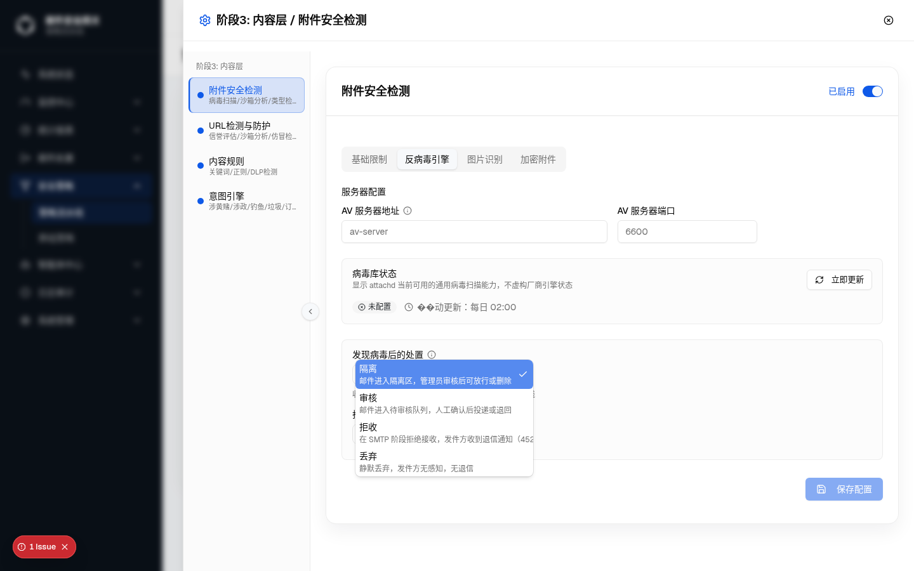
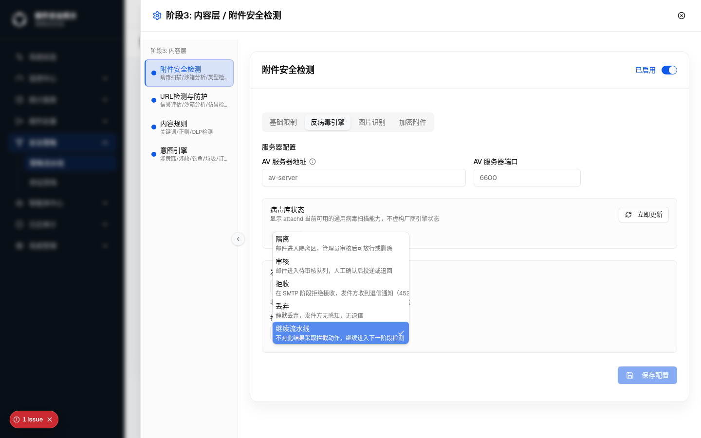
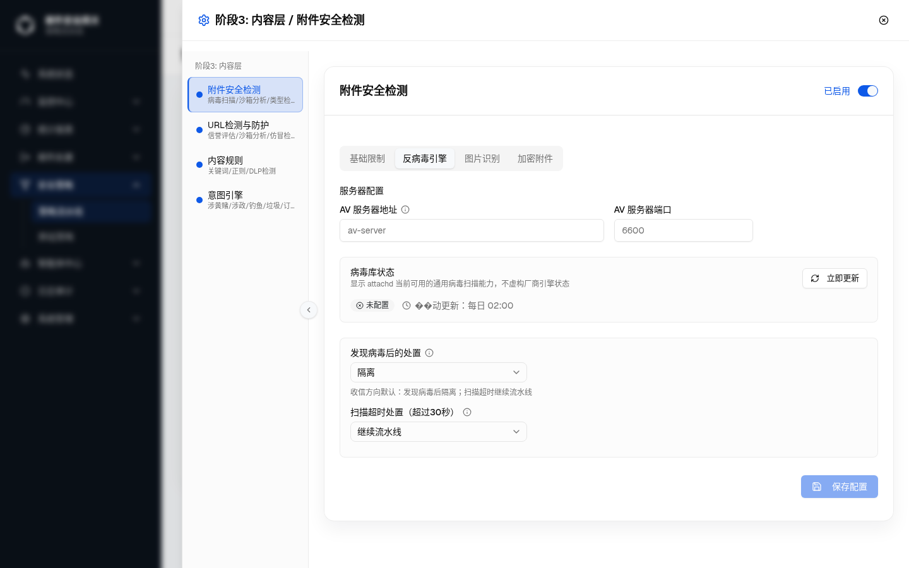
| 版本 | 日期 | commit | 摘要 |
|---|---|---|---|
| v1 | 2026-08-02 | 0b41d26 |
新建 GT-12731.html，记录 GT-12723 禁用模块切换交互闪回修复：变更 1（子页 useModuleMaster 新增 loaded、URL/意图/附件子页加载完成前不上报乐观启用态）、变更 2（PolicyPipelinePage 抽屉打开即预取 security-modules 作为 stage3 导航首帧兜底真值，dotOn/summaryText 改为「本地状态 ?? 兜底真值」）；含用户实拍问题现象截图 S-1/S-2 与浏览器实拍修复后稳态 S-3/S-4；差异 D-001~D-003、待确认 Q-001~Q-002。 |
| v2 | 2026-08-03 | 工作区已提交 |
追加一级需求 GT-12751 高级过滤规则优化项：变更 3（意图引擎条件从枚举单选升级为专属 intentEngine 面板，支持配置多个意图、每意图独立选择「分类优先 / 分段阈值」双检测模式，取值以「意图:模式[:lo,hi]」经 ';' 连接、OR 组合、同意图去重，含 serde 列表编解码 / expression 多条目完整性校验 / 四语新增「添加意图·移除」并补齐 inputType.intentEngine）、变更 4（安全检测移除「RBL 结果」「显示名仿冒」两条件，目录 51→49、安全检测 20→18、select 12→10，四语删对应文案且保留其他命名空间同名键）；含浏览器实拍 S-1（多意图面板）/ S-2（安全检测清单无 RBL/仿冒）/ S-3（模块支持 49 种条件类型）；差异新增 D-004~D-006、待确认新增 Q-003。 |
| v3 | 2026-08-03 | 工作区已提交 |
补全 GT-12751 本轮全部条件配置优化，将用户提出的 10 个优化点全部落文档并加「10 点 → 区块」对照表：变更 5（条件目录移除「功能组 / URL 沙箱结果 / 短链展开」，54→51，featureGroup 面板归零）、变更 6（值控件规范化：加密附件 / Mail From 为空→是/否 布尔控件，二维码 ODR→成功/失败，信封-头 From 一致性→一致/不一致，病毒扫描→有毒/无毒，四语补齐枚举文案）、变更 7（修复发信人组下拉：dispatcher 为 sender_group 补正 map_keys_source 指向群组策略发信人组）、变更 8（发件组织 orgDept 部门树多选实现）、变更 9（说明卡 DescriptionCard 增强��输入类型/数据来源/格式示例/有效范围/运算符/推荐配置多段）、变更 10（修复「选中过多无法再添加」：已选区限高独立滚动、添加区 flex-1 min-h-0 常驻）；新增浏览器实拍 S-4（病毒有毒/无毒值）/ S-5（发件组织部门树）/ S-6（发件人组群组下拉）/ S-7（8 条件已选仍可添加）；差异新增 D-007~D-012、待确认新增 Q-004；文档版本 v2→v3；顺带修复本次编辑区 2 处 UTF-8 乱码（多段 / 注释分隔符）。 |
| v4 | 2026-08-04 | 工作区已提交 |
追加一级需求 GT-12753 高级过滤规则——新建规则——处置策略：免责声明 / 外部邮件提醒，去掉「自定义模板」：变更 11（免责声明 addon_policy 移除「声明模板」下拉——standard/legal/custom，defaultAddonParams 不再写 template，配置区仅保留「插入位置」；ActionSummary disclaimer 摘要改为显示插入位置；四语删 disclaimerTemplate/Standard/Legal/Custom）、变更 12（外部邮件提醒移除「模板」下拉——standard/security/custom，defaultAddonParams 不再写 template，仅保留「插入位置」+ 外部发件人提示；ActionSummary externalReminder 摘要改为显示插入位置；四语删 externalReminderTemplate/Standard/Security/Custom）；新增浏览器实拍 S-1（免责声明去模板仅剩插入位置）/ S-2（外部邮件提醒去模板仅剩插入位置，摘要显示正文顶部）；差异新增 D-013、待确认新增 Q-005；文档版本 v3→v4；顺带修复免责声明 / 外部邮件提醒功能块内既有 UTF-8 乱码（ru/th 名称、描述、位置、提示、内容占位符）。 |
| v5 | 2026-08-04 | 02a906d |
将一级需求 GT-11675 附件安全检测-图片识别，OCR深度检测功能缺失从 GT-12695.html 移入本文档（GT-12695.html 已删除，version.json 同步标注移动）：新增变更 13（图片OCR检测模式去掉从未实现的「深度检测（手写+印刷）」禁用占位项，检测模式收窄为「不检测 / 检测」，唯一有效模式文案「轻度检测（仅印刷体）」重命名为「检测」；ImageDetectTab 删 deep SelectItem；类型 ocr_mode 收窄 'none'|'light'；getImageDetectConfig 对历史 'deep' 归一为 'light'；四语删 ocrMode_deep、改 ocrMode_light、改写 tooltips.ocrMode 与 ocrSendHint；i18n-parity 移除 ocrMode_deep）、变更 14（方案 A：检测模式=不检测时禁用「检测数量上限」输入并显示灰字提示「选择「检测」后可配置」，新增四语 imageDetect.ocrLimitDisabledHint 并登记 i18n-parity 必需键）；沿用浏览器实拍 S-1（检测模式下拉仅两项）+ S-2（不检测时数量上限禁用+提示，1694×1046）；差异新增 D-014~D-016（原 GT-12695 的 D-001~D-003 重排）、待确认新增 Q-006（原 Q-001 重排）；C 差异范围 D-001~D-016、待确认 Q-001~Q-006；文档版本 v4→v5。 |
| v6 | 2026-08-04 | 02a906d |
追加一级需求 GT-11651 内容规则-执行动作调整（内容规则新建/编辑抽屉 → 执行动作下拉）：新增变更 15（ContentRuleDrawer 的 ACTIONS 数组移除 tag_deliver，下拉由 6 项减为 5 项；经用户确认保留 deliver；ContentRuleUiAction 类型与历史 tag_deliver 标记配置块保留不删）、变更 16（block 标题「阻断」改为「拒收」，为 5 种动作补充灰字说明，新增 actionHint() 助手、SelectItem 改标题+说明两行式、SelectTrigger 仅显示标题；四语改 contentRules.actionBlock 及 actionBlock/Discard/Isolate/ReviewHint）、变更 17（deliver 标题「放行」改为「投递」，zh 改文案、th 由 ส่งต่อ 对齐为 ส่งมอบ、en/ru 语义本即投递不变）；浏览器实拍 S-1（执行动作下拉 5 项两行式：投递/隔离/审核/拒收/丢弃，1694×1046）；差异新增 D-017~D-019、待确认新增 Q-007；C 差异范围 D-001~D-019、待确认 Q-001~Q-007；顺带修复本文档 3 处既有 UTF-8 乱码（change-14 表格 clamp 说明、两处章节注释）；文档版本 v5→v6。 |
| v7 | 2026-08-04 | 336fe42 |
追加一级需求 GT-12754 反病毒引擎配置优化（附件安全检测 → 反病毒引擎 Tab）：新增变更 18（移除多租户租户管理员视角下顶部 info 横幅 antivirus-platform-managed-hint；AntivirusTab.tsx 条件渲染改为 !hidePlatformConfig 分支，横幅 DOM 节点完全消除）、变更 19（移除执行动作配置 section 标题行「当前方向执行动作」Label；i18n key actionConfig 保留于文件与 parity 测试，UI 不再引用）、变更 20（执行动作 reject 标签「阻断」改为「拒收」，四语同步：Block→Reject / Блокировать→Отклонить / บล็อก→ปฏิเสธ；与 GT-11651 变更 16 语义对齐）、变更 21（为执行动作下拉两个 Select 的 SelectItem 添加「动作名称 + 灰字说明」两行式渲染；新增 i18n 节 attachmentSecurity.actionDesc.*（zh/en/ru/th 四语，5 个 key：quarantine/audit/reject/discard/accept）；SelectTrigger 内 SelectValue 传 children 覆盖 Radix 默认回退，确保触发器仅显动作名称；parity 测试补登 actionDesc.* 5 个必需 key）；浏览器实拍 S-1（病毒动作下拉展开，1440×900）/ S-2（超时动作下拉展开）/ S-3（Tab 默认态，无横幅无标题行）；目录追加 GT-12754 分组（变更 18~21）；title 追加本需求；文档版本 v6→v7。 |